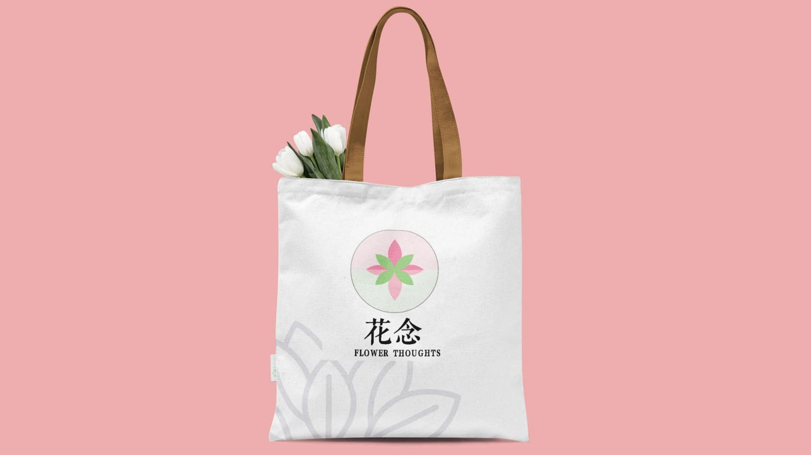
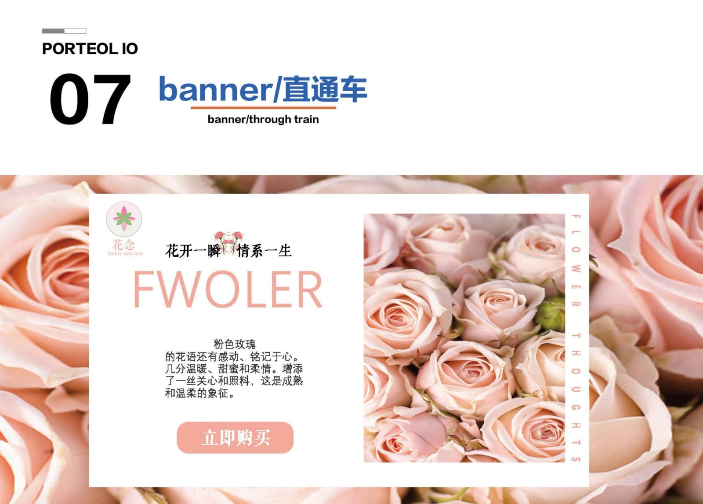

文化空间 / 主 KV
VISUAL DESIGN · INTERACTIVE STORY
平面设计 / B站互动内容 / AI 影像
探索视觉、叙事与新工具的边界。
01 / GRAPHIC DESIGN





02 / BILIBILI TOY
03 / AI COMIC DRAMA
AI VIDEO / 2025
以视觉设计经验为基础，将 AI 图像、动态镜头与叙事节奏组合成完整片段。这里记录的不只是一次工具尝试，也是我从平面表达走向动态内容创作的阶段性实践。
点击播放，观看完整作品。 播放器无法加载？直接打开视频 ↗04 / ABOUT ME
我相信设计不只是让画面变得好看，更是在有限的信息中找到清晰、准确且有温度的表达。
2023 年，我在山东先森科技有限公司担任设计师，参与视觉设计与品牌内容制作，在真实项目中积累了从需求理解、方案执行到成果交付的完整经验。
后来因家庭原因回到家乡，我没有停止创作，而是把这段变化当作重新出发的机会，开始系统学习 AI 图像、内容生成与动态影像，并尝试将传统设计方法与 AIGC 工具结合。
2024 年底至 2025 年初，我参加了 AIGC 日历编排活动，创作成果被收录并获得活动奖品。这次经历让我更确定：工具会不断变化，但审美判断、叙事能力和持续行动，始终是创作者最重要的底层能力。


05 / CONTACT